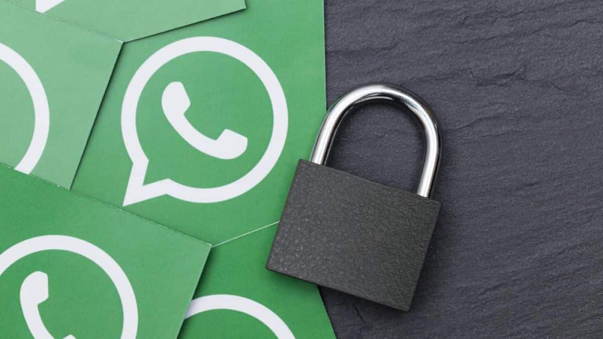
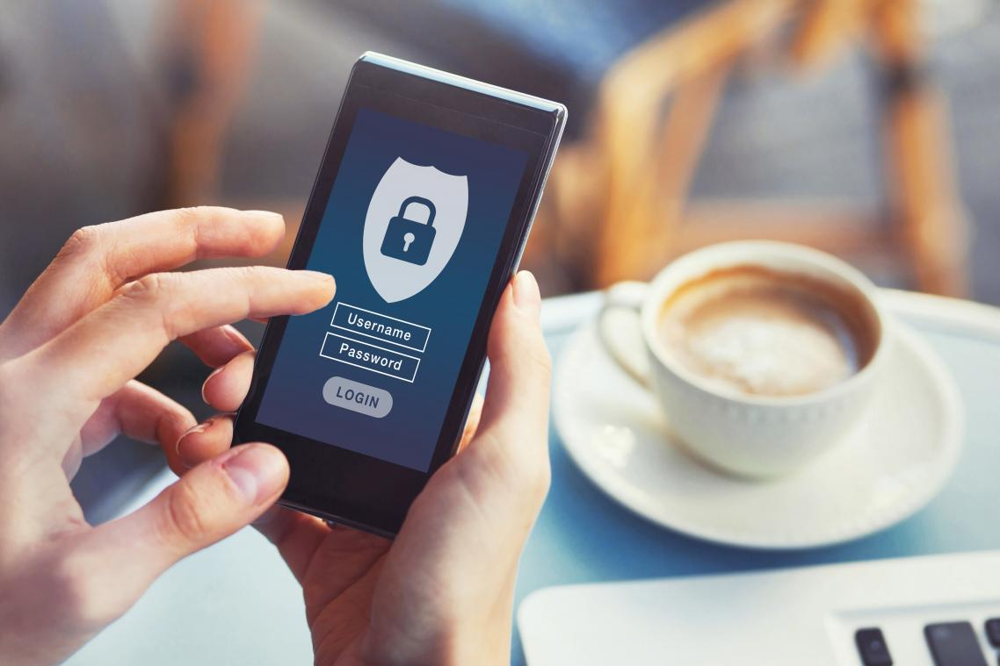
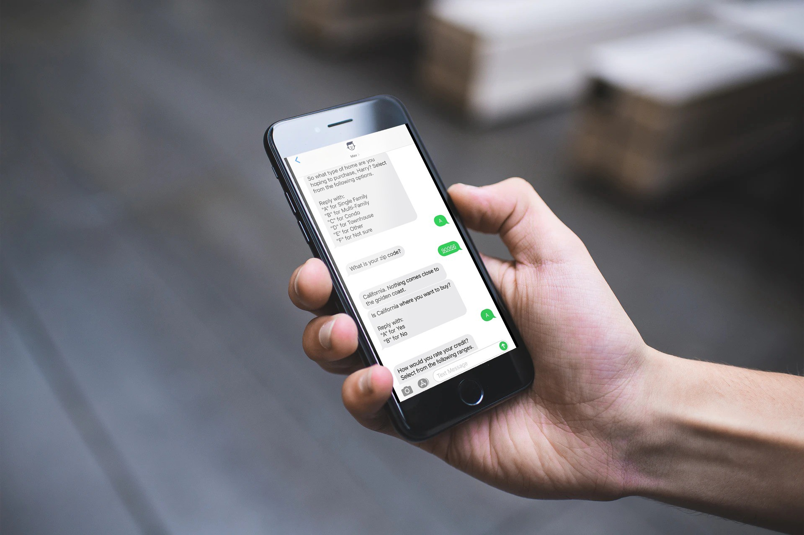

Dicas de segurança para WhatsApp
O WhatsApp é um dos Apps de mensagens mais utilizados em todo o mundo com mais de 1 bilhão de usuários ativos espalhados pelo globo. E como um aplicativo dessa magnitude não seria para menos ser um alvo de pessoas mal-intencionadas. O App investe em sua segurança utilizando diversas ferramentas de proteção de dados e criptografia avançada mas ainda deixa a desejar no quesito segurança.
Como exemplo o App e seus usuários tem sido vítima de ataques e golpes diversas vezes, como diz uma pesquisa feita pela PSafe em 2020 que mostrou que mais de 5 milhões de brasileiros tiveram sua conta do WhatsApp clonada e 15 mil caem em golpes diariamente. E com a adição de pagamentos no aplicativo e outras facilidades como Pix fazem com que os números só tendem a aumentar.
Por isso preparei uma lista com itens para te ajudar a ter mais segurança no App.
Verificação duas etapas (2FA)

Infelizmente a verificação duas etapas do WhatsApp não é a mais completa (pois não permite o uso de um autenticador), mas já aumenta muito a proteção do App.
Para a proteção você adiciona um PIN e depois um email para a recuperação do mesmo, assim sempre que abrir o APP ou mudar algo importante na sua conta será necessário inserir o PIN e você será notificado por email sobre mudanças feitas na sua conta.
Também é possível utilizar a digital para desbloquear o APP agilizando o processo.
Proteger o código de segurança do SMS

Nunca compartilhe o código de segurança enviado pelo WhatsApp por SMS. Muitos golpistas utilizam várias desculpas para pedir o código como promoções, verificações de compras, bônus de credito, verificações de banco entre outros. Com o código eles podem trocar o seu WhatsApp de celular, clonar os dados do seu WhatsApp e se a sua conta não tiver um PIN ter acesso total a sua conta.
Privacidade
Mudar as opções de privacidade também é muito importante. Escolher quem pode ver sua foto de perfil, seu visto por último, seu status, quem pode te mandar mensagens, fazer ligações e quem pode te adicionar em grupos faz com que a probabilidade de você ser alvo de golpistas diminua muito, pois deixa mais difícil para os golpistas te encontrarem e chegarem até você. Quanto menos informações pessoais sua na internet maior a sua segurança.
Caso necessário você ainda pode bloquear usuários mas somente depois de receber mensagens.
Backup em nuvem
No backup são utilizados dois sistemas de terceiros, o Google Drive e o iCloud. O que é bom por serem empresas grandes, menos pelo fato de que informações jogadas na nuvem não são criptografadas deixando extremamente vulneráveis para alguém acessa-lás. Então se você possui informações confidenciais em suas conversas é melhor apaga-lás ou desativar a opção de backup em nuvem.
Boas práticas
Algumas práticas também ajudam na segurança
- Nunca compartilhar seu PIN
- Ficar atento a mensagens e ligações
- Manter o Aplicativo sempre atualizado
- Não utilizar Wifi público
- Verificar as permissões dos Apps
- Utilizar um bom Anti-virus como o Kaspersky ou Bitdefender